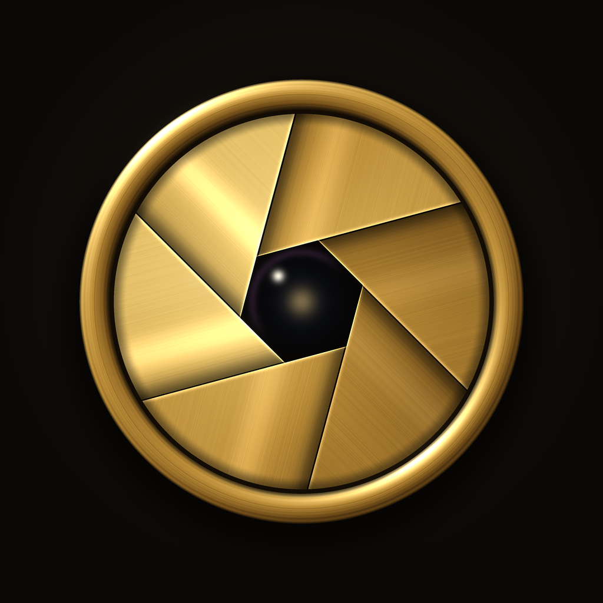
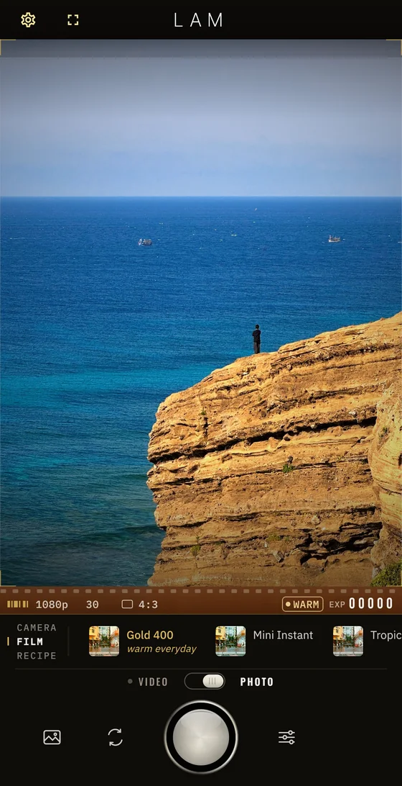
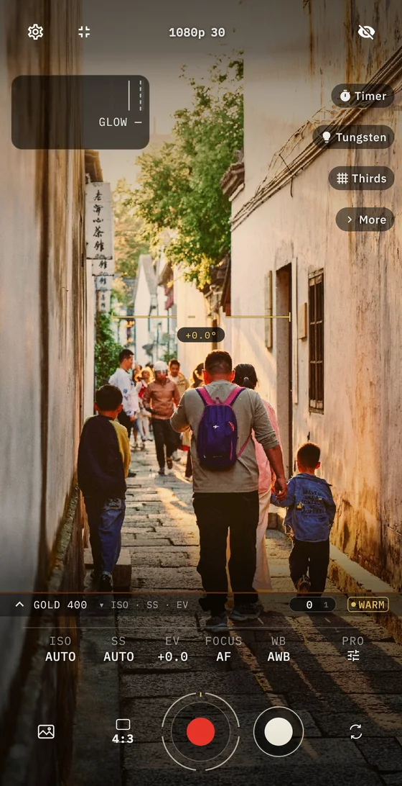
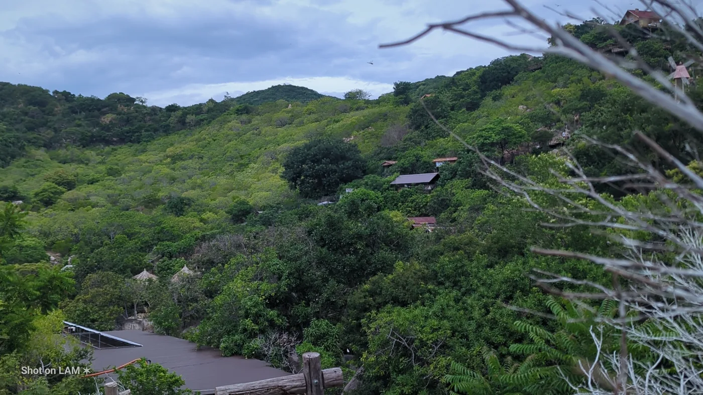
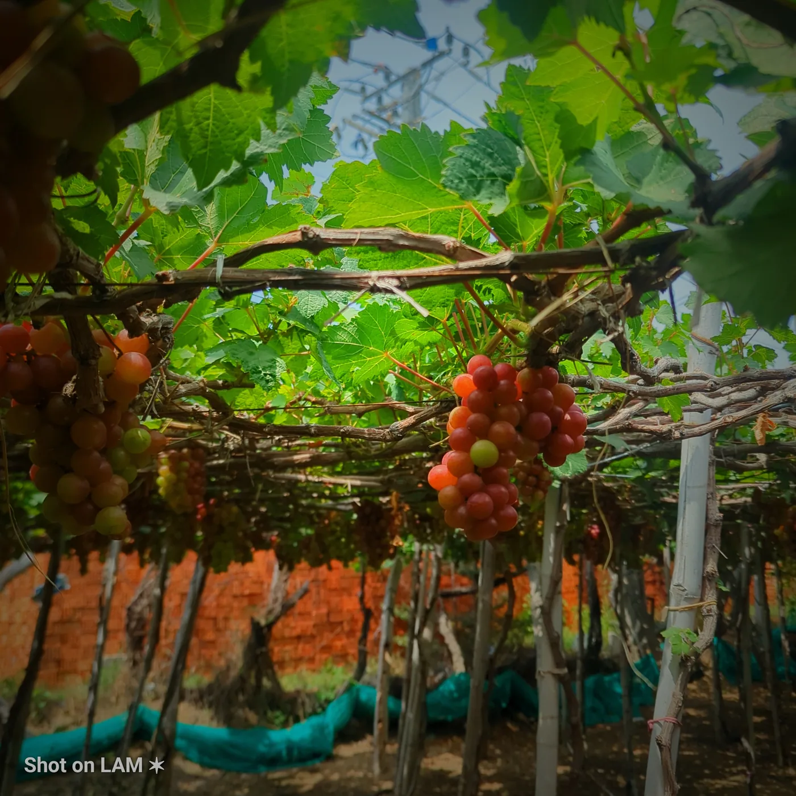
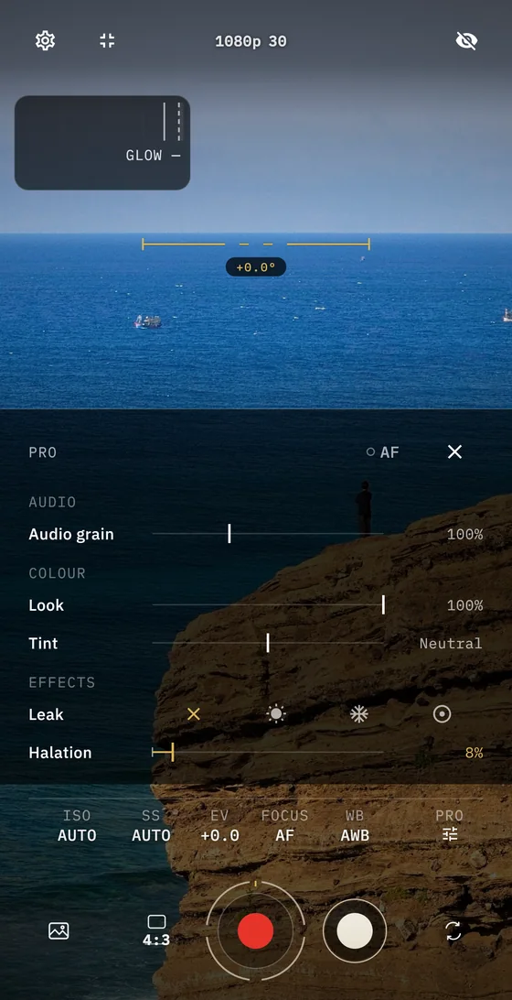

EN
VI
中文
繁體
日本語
한국어
ไทย
ID
MS
TL
ខ្មែរ
ລາວ
DE
FR
ES
PT
العربية
हिन्दी
မြန်မာ

LAM
16
31
49
5
·


DISPOSABLE

CCD 2000
CCD PINK

GOLD 400
GOLD 200
True Skin
Warm SEA
Golden Hour
Neutral
Cool Neutral
AUTO
01
02
03
I
II
III
IV
V
VI
PROMPT
AE · AWB
AF
FOCUS
16 · S8
2.39 · 1.85
01
02
03
NOIR
SAKURA
CHROME
LUNA
JADE
Slate Blue
Saddle Tan
Chocolate
Charcoal
Bordeaux

$0
+
+
+
+
+
+